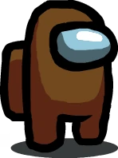
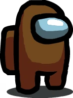

Among Us Interactive Map
Created by LangkaWS
Mates


 



Corpses


Disclaimer
This application is an unofficial fan app. LangkaWS is not related to with InnerSloth or people working at InnerSloth. This is a non-profit application, run by a fan and all materials on this app are for entertainment purposes only.
You can find more of my work on my website langkaws.github.io
All pictures come from Among Us fandom wiki and from memeymatt (from reddit)